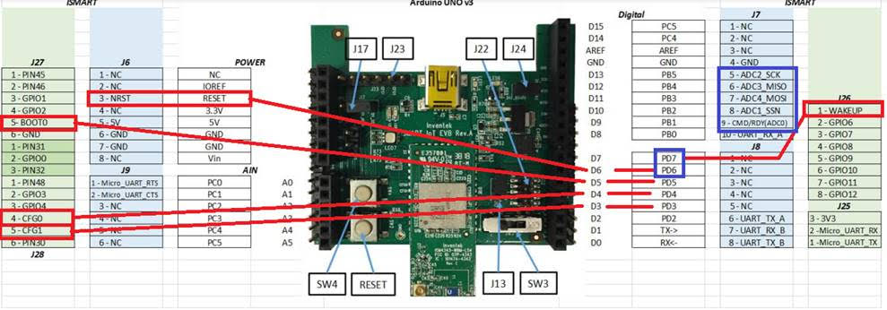

Inventek es-WIFI Shield¶
Overview¶
The es-WIFI (embedded Serial-to-WiFi) modules are devices developed by Inventek Systems. It integrates WIFI and optionaly Bluetooth Low Energy. The es-WIFI devices can run Cypress WICED or Inventek’s IWIN (Inventek Systems Wireless Interoperability Network) AT commands set. The current es-WIFI driver is able to use one of two serial interfaces: SPI or UART.
The Zephyr es-WIFI drivers was implemented using ISM43362-M3G-L44 with SPI interface. The UART was implemented with ISM4343-WBM-L151. Besides that, user can reprogram the modules to switch from one interface type to another by the JTAG pin header.
ISMART4343C-EVB¶
The ISMART4343C-EVB 1 is a development Kit with Arduino Uno R3 compatible shield. It allows evaluate es-WIFI modules with SPI or UART interface. For UART interface the inventek_eswifi_arduino_uart 4 must be selected. For SPI interface the inventek_eswifi_arduino_spi 5 must be enabled. The EVB can use 5V from Arduino header, if board provide it, J17 position 1-2. Otherwise, J17 2-3 will select USB-5V. More information can be found at ISMART4343C-EVB Users Manual 2.
Note
The Inventek’s EVBs signals are 3.3V only.
{kind=link}
Pins Assignment of the ISMART EVBs¶
The below table presents signals by interface. The UART switch SW3 must be on position 3 to enable RX/TX signals when using es-WIFI with UART firmware.
To enable full control by Arduino header user should do some manual wiring. The signals from D3 up to D7 are not connected by default on the Inventek’s shield. These signals marked as optional can help on development. The current driver do not handle that signals and are simple suggestions and can be left as is. Some arduino boards don’t have NRST pin connected to a GPIO pin. The recomendation is bend the NRST pin and make a wire to D6. WAKE-UP signal is available at header J26 pin 1 and shield configuration uses D7 to control that signal, user need do a wire connecting these two terminals. On the below image is possible see suggested wiring connections.
{kind=link}
Arduino Connector Pin |
Function |
Serial Connection |
|---|---|---|
D0 |
UART RX |
UART |
D1 |
UART TX |
UART |
D3 |
CFG-1 |
UART/SPI [optional] |
D4 |
CFG-0 |
UART/SPI [optional] |
D5 |
BOOT-0 |
UART/SPI [optional] |
D6 |
NRST |
UART/SPI [wiring] |
D7 |
WAKE-UP |
UART/SPI [wiring] |
D9 |
CMD/RDY |
SPI |
D10 |
SPI CS |
SPI |
D11 |
SPI MOSI |
SPI |
D12 |
SPI MISO |
SPI |
D13 |
SPI SCK |
SPI |
Supported variations¶
The below table suggests shield variation accordingly with end user application. When a standard Arduino R3 connector is available on board, user should select the matching shield configuration based on the serial interface (SERIAL or SPI). The inventek_eswifi is available to allow users testing a built-in module with dedicated <board>.overlay and <board>.defconfig files.
Connector Standard |
Shield Designation |
Variation |
|---|---|---|
Without standard (overlay) |
1 |
|
Arduino by UART |
2 |
|
Arduino by SPI |
3 |
Requirements¶
This shield requires a board which provides a configuration that allows an UART or SPI interface and two or three GPIO. (see Shields for more details).
Note
Some boards may already have a network interface: Check network documentation to understand how properly configure both interfaces. To keep simple, you can keep only the WIFI interface enabled at Networking -> Link Layer Options. This will avoid problems running Zephyr samples.
Tested Boards¶
Board |
Disabled Interface |
Variation |
|---|---|---|
ATMEL sam_v71_xult |
Ethernet |
2 , 3 |
ST nucleo_f767zi |
Ethernet |
2 , 3 |
ST disco_l475_iot1 |
Note
ST disco_l475_iot1 already have an ISM43362 module with IWIN SPI firmware. It doesn’t need this shield to expose es-WIFI. It is only used here as reference to demonstrate how configure an on-board module.
Sample usage¶
The reference sample for WIFI is Wi-Fi sample. It allows you use WIFI shell to scan local Wireless networks. With the password you can pick, connect and send ping.
Build and Programming¶
Set -DSHIELD=<shield designator> when you invoke west build.
west build -b [sam_v71_xult | nucleo_f767zi] samples/net/wifi -- -DSHIELD=inventek_eswifi_arduino_uart
west flash
west build -b [sam_v71_xult | nucleo_f767zi] samples/net/wifi -- -DSHIELD=inventek_eswifi_arduino_spi
west flash
west build -b disco_l475_iot1 samples/net/wifi
west flash